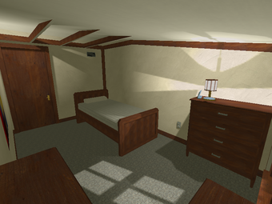
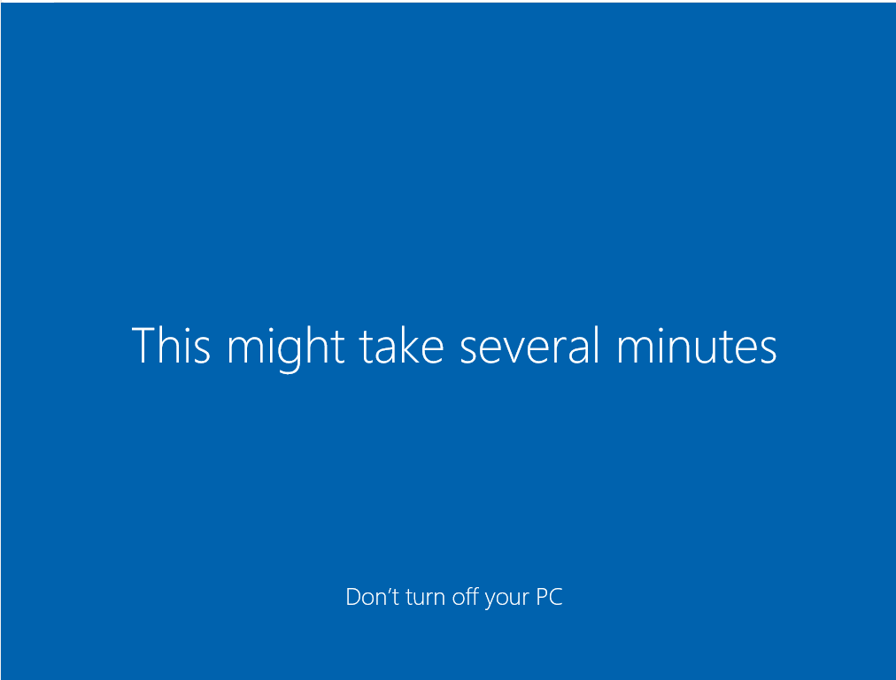

Welcome To Grumpz's Page (new edition) exclusively on
BlockPage!
This is my new subsite, more work is going to be done to
it in the future.
The classic bedroom map, ahh the memories i never had.
But this map is awesome, Maps were a great feature that by the time i joined
were already gone, but i wish they were in modern blockland.

Doesnt everyone just love installing/updating windows 10?
